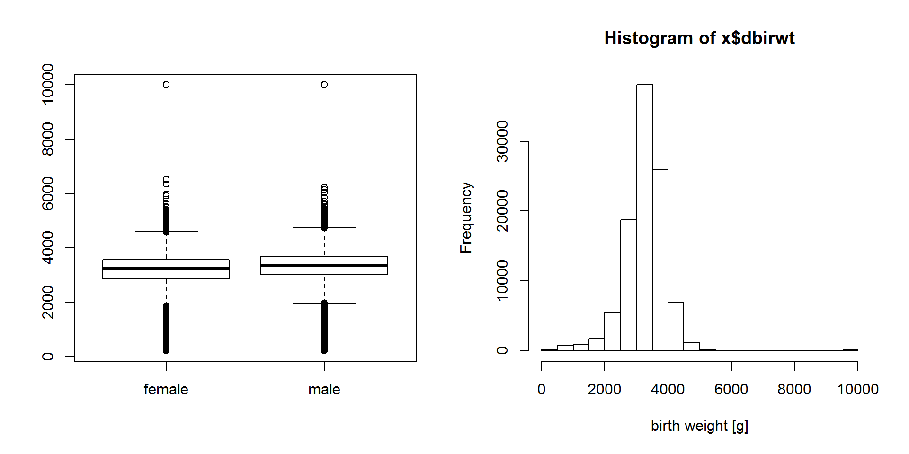
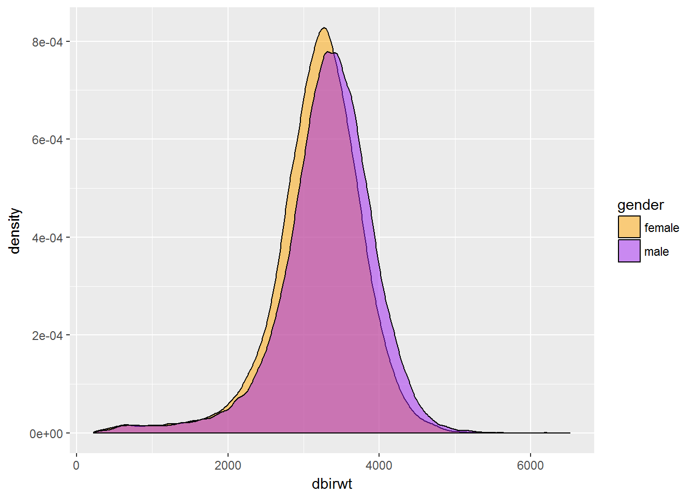
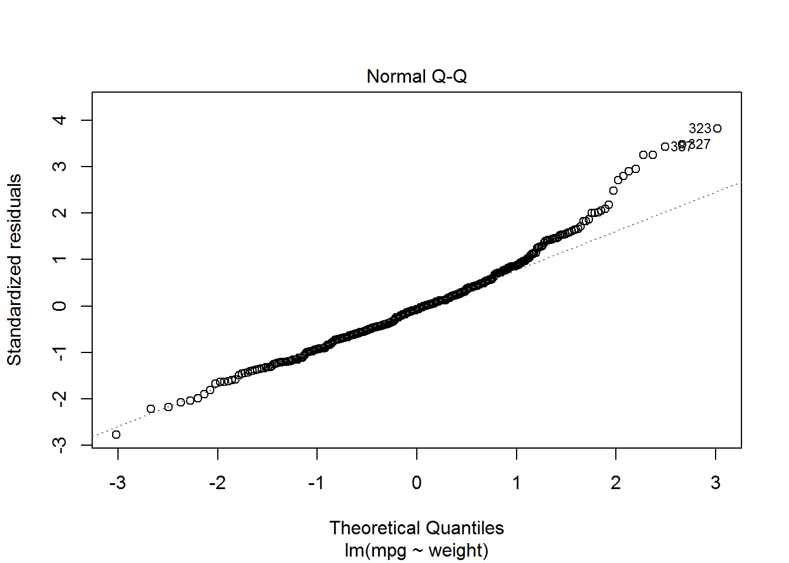
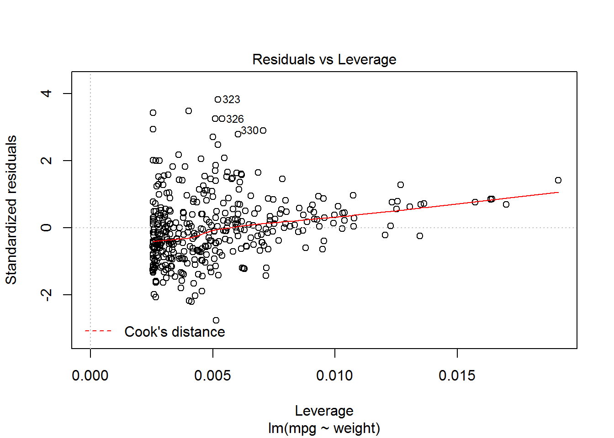
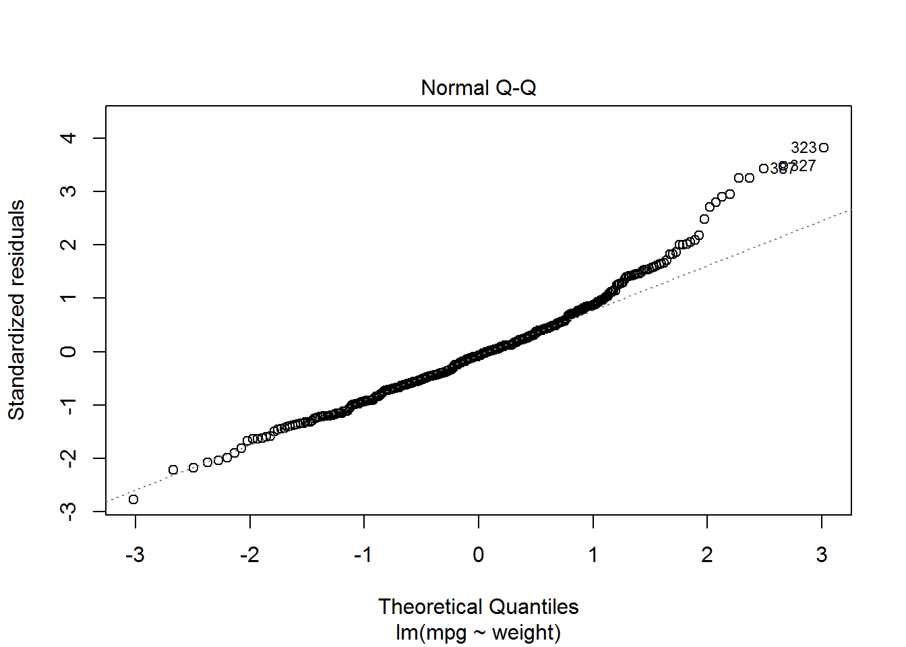
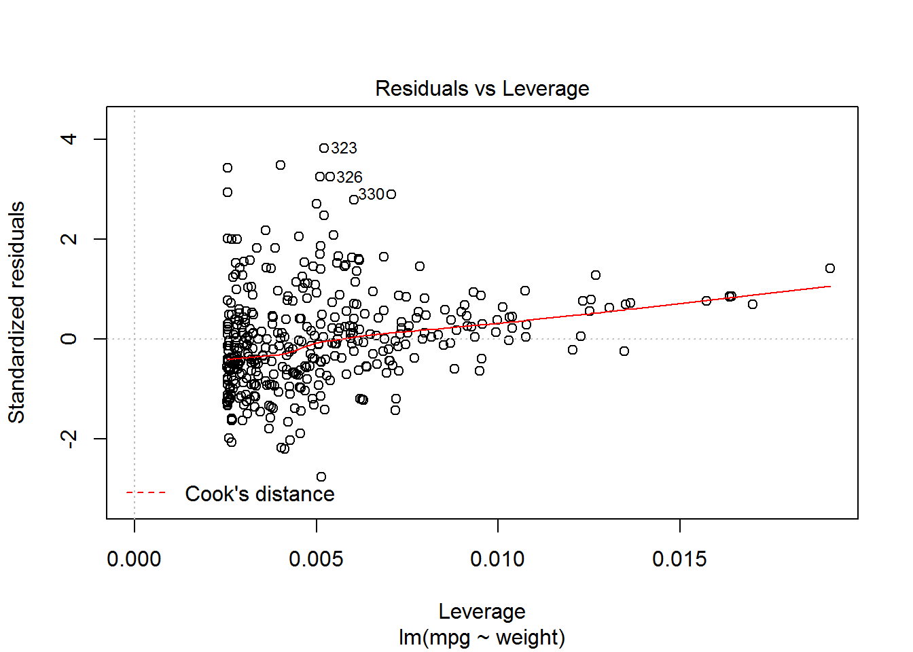
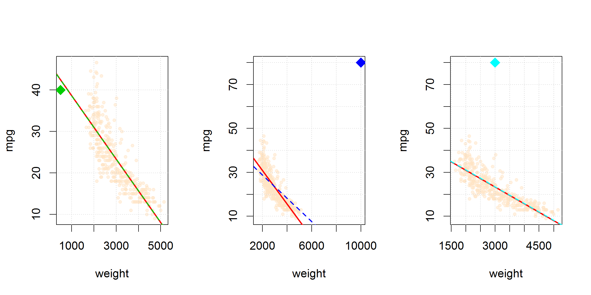
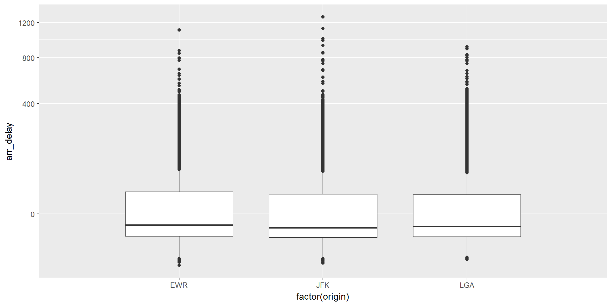

Day 2: Modeling in R
Markus Loecher, Berlin School of Economics and Law
1 Data manipulation
1.1 Data: nycflights13
To explore the basic data manipulation verbs of dplyr, we’ll start with the built in nycflights13 data frame. This dataset contains all 336776 flights that departed from New York City in 2013. The data comes from the US Bureau of Transportation Statistics, and is documented in ?nycflights13
library(nycflights13)## Warning: package 'nycflights13' was built under R version 3.3.3dim(flights)## [1] 336776 19head(flights)## # A tibble: 6 × 19
## year month day dep_time sched_dep_time dep_delay arr_time
## <int> <int> <int> <int> <int> <dbl> <int>
## 1 2013 1 1 517 515 2 830
## 2 2013 1 1 533 529 4 850
## 3 2013 1 1 542 540 2 923
## 4 2013 1 1 544 545 -1 1004
## 5 2013 1 1 554 600 -6 812
## 6 2013 1 1 554 558 -4 740
## # ... with 12 more variables: sched_arr_time <int>, arr_delay <dbl>,
## # carrier <chr>, flight <int>, tailnum <chr>, origin <chr>, dest <chr>,
## # air_time <dbl>, distance <dbl>, hour <dbl>, minute <dbl>,
## # time_hour <dttm>dplyr can work with data frames as is, but if you’re dealing with large data, it’s worthwhile to convert them to a tbl_df: this is a wrapper around a data frame that won’t accidentally print a lot of data to the screen.
1.1.1 Single table verbs
Dplyr aims to provide a function for each basic verb of data manipulation:
filter()(andslice())arrange()select()(andrename())distinct()mutate()(andtransmute())summarise()sample_n()(andsample_frac())
If you’ve used plyr before, many of these will be familar.
1.1.2 Filter rows with filter()
filter() allows you to select a subset of rows in a data frame. The first argument is the name of the data frame. The second and subsequent arguments are the expressions that filter the data frame:
For example, we can select all flights on January 1st with:
library(dplyr)
filter(flights, month == 1, day == 1)## # A tibble: 842 × 19
## year month day dep_time sched_dep_time dep_delay arr_time
## <int> <int> <int> <int> <int> <dbl> <int>
## 1 2013 1 1 517 515 2 830
## 2 2013 1 1 533 529 4 850
## 3 2013 1 1 542 540 2 923
## 4 2013 1 1 544 545 -1 1004
## 5 2013 1 1 554 600 -6 812
## 6 2013 1 1 554 558 -4 740
## 7 2013 1 1 555 600 -5 913
## 8 2013 1 1 557 600 -3 709
## 9 2013 1 1 557 600 -3 838
## 10 2013 1 1 558 600 -2 753
## # ... with 832 more rows, and 12 more variables: sched_arr_time <int>,
## # arr_delay <dbl>, carrier <chr>, flight <int>, tailnum <chr>,
## # origin <chr>, dest <chr>, air_time <dbl>, distance <dbl>, hour <dbl>,
## # minute <dbl>, time_hour <dttm>This is equivalent to the more verbose code in base R:
flights[flights$month == 1 & flights$day == 1, ]To select rows by position, use slice():
slice(flights, 1:10)## # A tibble: 10 × 19
## year month day dep_time sched_dep_time dep_delay arr_time
## <int> <int> <int> <int> <int> <dbl> <int>
## 1 2013 1 1 517 515 2 830
## 2 2013 1 1 533 529 4 850
## 3 2013 1 1 542 540 2 923
## 4 2013 1 1 544 545 -1 1004
## 5 2013 1 1 554 600 -6 812
## 6 2013 1 1 554 558 -4 740
## 7 2013 1 1 555 600 -5 913
## 8 2013 1 1 557 600 -3 709
## 9 2013 1 1 557 600 -3 838
## 10 2013 1 1 558 600 -2 753
## # ... with 12 more variables: sched_arr_time <int>, arr_delay <dbl>,
## # carrier <chr>, flight <int>, tailnum <chr>, origin <chr>, dest <chr>,
## # air_time <dbl>, distance <dbl>, hour <dbl>, minute <dbl>,
## # time_hour <dttm>1.1.3 Arrange rows with arrange()
arrange() works similarly to filter() except that instead of filtering or selecting rows, it reorders them. It takes a data frame, and a set of column names (or more complicated expressions) to order by. If you provide more than one column name, each additional column will be used to break ties in the values of preceding columns:
arrange(flights, year, month, day)## # A tibble: 336,776 × 19
## year month day dep_time sched_dep_time dep_delay arr_time
## <int> <int> <int> <int> <int> <dbl> <int>
## 1 2013 1 1 517 515 2 830
## 2 2013 1 1 533 529 4 850
## 3 2013 1 1 542 540 2 923
## 4 2013 1 1 544 545 -1 1004
## 5 2013 1 1 554 600 -6 812
## 6 2013 1 1 554 558 -4 740
## 7 2013 1 1 555 600 -5 913
## 8 2013 1 1 557 600 -3 709
## 9 2013 1 1 557 600 -3 838
## 10 2013 1 1 558 600 -2 753
## # ... with 336,766 more rows, and 12 more variables: sched_arr_time <int>,
## # arr_delay <dbl>, carrier <chr>, flight <int>, tailnum <chr>,
## # origin <chr>, dest <chr>, air_time <dbl>, distance <dbl>, hour <dbl>,
## # minute <dbl>, time_hour <dttm>Use desc() to order a column in descending order:
arrange(flights, desc(arr_delay))## # A tibble: 336,776 × 19
## year month day dep_time sched_dep_time dep_delay arr_time
## <int> <int> <int> <int> <int> <dbl> <int>
## 1 2013 1 9 641 900 1301 1242
## 2 2013 6 15 1432 1935 1137 1607
## 3 2013 1 10 1121 1635 1126 1239
## 4 2013 9 20 1139 1845 1014 1457
## 5 2013 7 22 845 1600 1005 1044
## 6 2013 4 10 1100 1900 960 1342
## 7 2013 3 17 2321 810 911 135
## 8 2013 7 22 2257 759 898 121
## 9 2013 12 5 756 1700 896 1058
## 10 2013 5 3 1133 2055 878 1250
## # ... with 336,766 more rows, and 12 more variables: sched_arr_time <int>,
## # arr_delay <dbl>, carrier <chr>, flight <int>, tailnum <chr>,
## # origin <chr>, dest <chr>, air_time <dbl>, distance <dbl>, hour <dbl>,
## # minute <dbl>, time_hour <dttm>1.1.4 Select columns with select()
Often you work with large datasets with many columns but only a few are actually of interest to you. select() allows you to rapidly zoom in on a useful subset using operations that usually only work on numeric variable positions:
# Select columns by name
select(flights, year, month, day)## # A tibble: 336,776 × 3
## year month day
## <int> <int> <int>
## 1 2013 1 1
## 2 2013 1 1
## 3 2013 1 1
## 4 2013 1 1
## 5 2013 1 1
## 6 2013 1 1
## 7 2013 1 1
## 8 2013 1 1
## 9 2013 1 1
## 10 2013 1 1
## # ... with 336,766 more rows# Select all columns between year and day (inclusive)
select(flights, year:day)## # A tibble: 336,776 × 3
## year month day
## <int> <int> <int>
## 1 2013 1 1
## 2 2013 1 1
## 3 2013 1 1
## 4 2013 1 1
## 5 2013 1 1
## 6 2013 1 1
## 7 2013 1 1
## 8 2013 1 1
## 9 2013 1 1
## 10 2013 1 1
## # ... with 336,766 more rows# Select all columns except those from year to day (inclusive)
select(flights, -(year:day))## # A tibble: 336,776 × 16
## dep_time sched_dep_time dep_delay arr_time sched_arr_time arr_delay
## <int> <int> <dbl> <int> <int> <dbl>
## 1 517 515 2 830 819 11
## 2 533 529 4 850 830 20
## 3 542 540 2 923 850 33
## 4 544 545 -1 1004 1022 -18
## 5 554 600 -6 812 837 -25
## 6 554 558 -4 740 728 12
## 7 555 600 -5 913 854 19
## 8 557 600 -3 709 723 -14
## 9 557 600 -3 838 846 -8
## 10 558 600 -2 753 745 8
## # ... with 336,766 more rows, and 10 more variables: carrier <chr>,
## # flight <int>, tailnum <chr>, origin <chr>, dest <chr>, air_time <dbl>,
## # distance <dbl>, hour <dbl>, minute <dbl>, time_hour <dttm>You can rename variables with select() by using named arguments:
select(flights, tail_num = tailnum)## # A tibble: 336,776 × 1
## tail_num
## <chr>
## 1 N14228
## 2 N24211
## 3 N619AA
## 4 N804JB
## 5 N668DN
## 6 N39463
## 7 N516JB
## 8 N829AS
## 9 N593JB
## 10 N3ALAA
## # ... with 336,766 more rowsBut because select() drops all the variables not explicitly mentioned, it’s not that useful. Instead, use rename():
rename(flights, tail_num = tailnum)## # A tibble: 336,776 × 19
## year month day dep_time sched_dep_time dep_delay arr_time
## <int> <int> <int> <int> <int> <dbl> <int>
## 1 2013 1 1 517 515 2 830
## 2 2013 1 1 533 529 4 850
## 3 2013 1 1 542 540 2 923
## 4 2013 1 1 544 545 -1 1004
## 5 2013 1 1 554 600 -6 812
## 6 2013 1 1 554 558 -4 740
## 7 2013 1 1 555 600 -5 913
## 8 2013 1 1 557 600 -3 709
## 9 2013 1 1 557 600 -3 838
## 10 2013 1 1 558 600 -2 753
## # ... with 336,766 more rows, and 12 more variables: sched_arr_time <int>,
## # arr_delay <dbl>, carrier <chr>, flight <int>, tail_num <chr>,
## # origin <chr>, dest <chr>, air_time <dbl>, distance <dbl>, hour <dbl>,
## # minute <dbl>, time_hour <dttm>1.1.5 Extract distinct (unique) rows
Use distinct()to find unique values in a table:
distinct(flights, tailnum)## # A tibble: 4,044 × 1
## tailnum
## <chr>
## 1 N14228
## 2 N24211
## 3 N619AA
## 4 N804JB
## 5 N668DN
## 6 N39463
## 7 N516JB
## 8 N829AS
## 9 N593JB
## 10 N3ALAA
## # ... with 4,034 more rowsdistinct(flights, origin, dest)## # A tibble: 224 × 2
## origin dest
## <chr> <chr>
## 1 EWR IAH
## 2 LGA IAH
## 3 JFK MIA
## 4 JFK BQN
## 5 LGA ATL
## 6 EWR ORD
## 7 EWR FLL
## 8 LGA IAD
## 9 JFK MCO
## 10 LGA ORD
## # ... with 214 more rows(This is very similar to base::unique() but should be much faster.)
1.1.6 Add new columns with mutate()
Besides selecting sets of existing columns, it’s often useful to add new columns that are functions of existing columns. This is the job of mutate():
mutate(flights,
gain = arr_delay - dep_delay,
speed = distance / air_time * 60)## # A tibble: 336,776 × 21
## year month day dep_time sched_dep_time dep_delay arr_time
## <int> <int> <int> <int> <int> <dbl> <int>
## 1 2013 1 1 517 515 2 830
## 2 2013 1 1 533 529 4 850
## 3 2013 1 1 542 540 2 923
## 4 2013 1 1 544 545 -1 1004
## 5 2013 1 1 554 600 -6 812
## 6 2013 1 1 554 558 -4 740
## 7 2013 1 1 555 600 -5 913
## 8 2013 1 1 557 600 -3 709
## 9 2013 1 1 557 600 -3 838
## 10 2013 1 1 558 600 -2 753
## # ... with 336,766 more rows, and 14 more variables: sched_arr_time <int>,
## # arr_delay <dbl>, carrier <chr>, flight <int>, tailnum <chr>,
## # origin <chr>, dest <chr>, air_time <dbl>, distance <dbl>, hour <dbl>,
## # minute <dbl>, time_hour <dttm>, gain <dbl>, speed <dbl>mutate allows you to refer to columns that you’ve just created:
mutate(flights,
gain = arr_delay - dep_delay,
gain_per_hour = gain / (air_time / 60)
)## # A tibble: 336,776 × 21
## year month day dep_time sched_dep_time dep_delay arr_time
## <int> <int> <int> <int> <int> <dbl> <int>
## 1 2013 1 1 517 515 2 830
## 2 2013 1 1 533 529 4 850
## 3 2013 1 1 542 540 2 923
## 4 2013 1 1 544 545 -1 1004
## 5 2013 1 1 554 600 -6 812
## 6 2013 1 1 554 558 -4 740
## 7 2013 1 1 555 600 -5 913
## 8 2013 1 1 557 600 -3 709
## 9 2013 1 1 557 600 -3 838
## 10 2013 1 1 558 600 -2 753
## # ... with 336,766 more rows, and 14 more variables: sched_arr_time <int>,
## # arr_delay <dbl>, carrier <chr>, flight <int>, tailnum <chr>,
## # origin <chr>, dest <chr>, air_time <dbl>, distance <dbl>, hour <dbl>,
## # minute <dbl>, time_hour <dttm>, gain <dbl>, gain_per_hour <dbl>1.1.7 Summarise values with summarise()
The last verb is summarise(). It collapses a data frame to a single row (this is exactly equivalent to plyr::summarise()):
summarise(flights,
delay = mean(dep_delay, na.rm = TRUE))## # A tibble: 1 × 1
## delay
## <dbl>
## 1 12.63907Below, we’ll see how this verb can be very useful.
1.1.8 Grouped operations
These verbs are useful on their own, but they become really powerful when you apply them to groups of observations within a dataset. In dplyr, you do this by with the group_by() function. It breaks down a dataset into specified groups of rows. When you then apply the verbs above on the resulting object they’ll be automatically applied “by group”. Most importantly, all this is achieved by using the same exact syntax you’d use with an ungrouped object.
In the following example, we split the complete dataset into individual planes and then summarise each plane by counting the number of flights (count = n()) and computing the average distance (dist = mean(Distance, na.rm = TRUE)) and arrival delay (delay = mean(ArrDelay, na.rm = TRUE)). We then use ggplot2 to display the output.
by_tailnum <- group_by(flights, tailnum)
delay <- summarise(by_tailnum,
count = n(),
dist = mean(distance, na.rm = TRUE),
delay = mean(arr_delay, na.rm = TRUE))
delay <- filter(delay, count > 20, dist < 2000)
# Interestingly, the average delay is only slightly related to the
# average distance flown by a plane.
library(ggplot2)
ggplot(delay, aes(dist, delay)) +
geom_point(aes(size = count), alpha = 1/2) +
geom_smooth() +
scale_size_area()
You use summarise() with aggregate functions, which take a vector of values and return a single number. There are many useful examples of such functions in base R like min(), max(), mean(), sum(), sd(), median(), and IQR(). dplyr provides a handful of others:
n(): the number of observations in the current groupn_distinct(x):the number of unique values inx.first(x),last(x)andnth(x, n)- these work similarly tox[1],x[length(x)], andx[n]but give you more control over the result if the value is missing.
For example, we could use these to find the number of planes and the number of flights that go to each possible destination:
destinations <- group_by(flights, dest)
summarise(destinations,
planes = n_distinct(tailnum),
flights = n()
)## # A tibble: 105 × 3
## dest planes flights
## <chr> <int> <int>
## 1 ABQ 108 254
## 2 ACK 58 265
## 3 ALB 172 439
## 4 ANC 6 8
## 5 ATL 1180 17215
## 6 AUS 993 2439
## 7 AVL 159 275
## 8 BDL 186 443
## 9 BGR 46 375
## 10 BHM 45 297
## # ... with 95 more rows1.2 Titanic
train <- read.csv("data/TitanicTrain.csv")The disaster was famous for saving “women and children first”, so let’s take a look at the Sex and Age variables to see if any patterns are evident. We’ll start with the gender of the passengers. After reloading the data into R, take a look at the summary of this variable:
round(prop.table(table(train$Sex, train$Survived),1),2)##
## 0 1
## female 0.26 0.74
## male 0.81 0.19Let’s create a new variable, “Child”, to indicate whether the passenger is below the age of 18:
train$Child <- 0
train$Child[train$Age < 18] <- 1Now we want to create a table with both gender and age to see the survival proportions for different subsets. Recall the dplyr version of the aggregate function:
suppressPackageStartupMessages(require(dplyr))
summarise(group_by(train, Sex, Child), round(mean(Survived),2), length(Survived))## Source: local data frame [4 x 4]
## Groups: Sex [?]
##
## Sex Child `round(mean(Survived), 2)` `length(Survived)`
## <fctr> <dbl> <dbl> <int>
## 1 female 0 0.75 259
## 2 female 1 0.69 55
## 3 male 0 0.17 519
## 4 male 1 0.40 58While the class variable is limited to a manageable 3 values, the fare is again a continuous variable that needs to be reduced to something that can be easily tabulated. Let’s bin the fares into less than $10, between $10 and $20, $20 to $30 and more than $30 and store it to a new variable:
train$Fare2 <- '30+'
train$Fare2[train$Fare < 30 & train$Fare >= 20] <- '20-30'
train$Fare2[train$Fare < 20 & train$Fare >= 10] <- '10-20'
train$Fare2[train$Fare < 10] <- '<10'Use the summarise function to compute the proportions and in each group defined by child, gender and Fare2:
- Find strong differences between male/female survival probabilities.
Partition your data into even finer subgroups, e.g. age and/or embarkation port and repeat.
## Source: local data frame [41 x 6]
## Groups: Child, Fare2, Sex [?]
##
## Child Fare2 Sex Embarked `round(mean(Survived), 2)`
## <dbl> <chr> <fctr> <fctr> <dbl>
## 1 0 <10 female C 1.00
## 2 0 <10 female Q 0.70
## 3 0 <10 female S 0.44
## 4 0 <10 male C 0.13
## 5 0 <10 male Q 0.07
## 6 0 <10 male S 0.10
## 7 0 10-20 female C 0.44
## 8 0 10-20 female Q 0.83
## 9 0 10-20 female S 0.76
## 10 0 10-20 male C 0.45
## # ... with 31 more rows, and 1 more variables: `length(Survived)` <int>2 Descriptive statistics
2.1 Measures of Central tendency
mean(flights$dep_delay)## [1] NAmean(flights$dep_delay, na.rm=T)## [1] 12.63907median(flights$dep_delay, na.rm=T)## [1] -2#robustness
mean(flights$dep_delay, na.rm=T, trim = 0.1)## [1] 3.3202572.2 Dispersion measures
Only sample stdev is included!
#var
sd(flights$dep_delay, na.rm=T)## [1] 40.21006IQR(flights$dep_delay, na.rm=T)## [1] 16mad(flights$dep_delay, na.rm=T)## [1] 5.93042.3 Descriptive boxplots
#define our own transformation
require(scales) # trans_new() is in the scales library
sign_sqrt_trans = function() trans_new("sign_sqrt", function(x) sign(x)*sqrt(abs(x)), function(x) sign(x)*x^2)2.3.1 Delays by carrier
if (baseR){
boxplot(arr_delay ~ carrier, data=flights)
grid()
} else {
p = ggplot(flights, aes( carrier,arr_delay))
p + geom_boxplot() + coord_trans(y="sign_sqrt") #+ scale_y_sqrt()
}## Warning: Removed 9430 rows containing non-finite values (stat_boxplot).
There appear to be significant delays by time-of-day:
if (baseR){
boxplot(arr_delay ~ hour, data=flights)
grid()
} else {
p = ggplot(flights, aes( factor(hour),arr_delay))
p + geom_boxplot() + coord_trans(y="sign_sqrt") #+ scale_y_sqrt()
}## Warning: Removed 9430 rows containing non-finite values (stat_boxplot).
3 Basic statistical tests
I have prepared a data file for you:
print(load("data/BirthWeights.rda"))## [1] "x"class(x$gender)## [1] "factor"#split the plotting region into 2 columns:
par(mfrow=c(1,2))
boxplot(dbirwt ~ gender, data=x)
hist(x$dbirwt, xlab="birth weight [g]")
3.1 remove outliers
#either:
ii = which(x$dbirwt> 8000)
x = x[-ii,]
#or:
x = subset(x, dbirwt <= 8000)3.2 density plot
library(ggplot2)
ggplot(x, aes(dbirwt, fill=gender)) + geom_density(alpha=.5) +
scale_fill_manual(values = c("orange", "purple")) # + theme(legend.position = "none")
3.2.1 t-test
Can we detect the difference in birth weights?
boys = subset(x, gender == "male")$dbirwt
girls = subset(x, gender == "female")$dbirwt
t.test(x=boys, y=girls)##
## Welch Two Sample t-test
##
## data: boys and girls
## t = 30.07, df = 99925, p-value < 2.2e-16
## alternative hypothesis: true difference in means is not equal to 0
## 95 percent confidence interval:
## 109.6238 124.9108
## sample estimates:
## mean of x mean of y
## 3309.642 3192.375Would a small sample suffice?
set.seed(1234)
b=sample(boys,100);g=sample(girls,100)
t.test(b,g)##
## Welch Two Sample t-test
##
## data: b and g
## t = 0.51544, df = 195.65, p-value = 0.6068
## alternative hypothesis: true difference in means is not equal to 0
## 95 percent confidence interval:
## -148.5721 253.7121
## sample estimates:
## mean of x mean of y
## 3225.44 3172.87What about these non integer degrees of freedom??
3.2.2 F-test for variances
var.test(b,g)##
## F test to compare two variances
##
## data: b and g
## F = 1.2461, num df = 99, denom df = 99, p-value = 0.2753
## alternative hypothesis: true ratio of variances is not equal to 1
## 95 percent confidence interval:
## 0.8384494 1.8520431
## sample estimates:
## ratio of variances
## 1.2461323.2.3 prop-test
(gs = table(train$Sex, train$Survived))##
## 0 1
## female 81 233
## male 468 109prop.test(gs)##
## 2-sample test for equality of proportions with continuity
## correction
##
## data: gs
## X-squared = 260.72, df = 1, p-value < 2.2e-16
## alternative hypothesis: two.sided
## 95 percent confidence interval:
## -0.6135708 -0.4926894
## sample estimates:
## prop 1 prop 2
## 0.2579618 0.81109193.2.4 Exact Binomial Test
binom.test(gs[1,2:1], p=0.75)##
## Exact binomial test
##
## data: gs[1, 2:1]
## number of successes = 233, number of trials = 314, p-value =
## 0.7447
## alternative hypothesis: true probability of success is not equal to 0.75
## 95 percent confidence interval:
## 0.6899084 0.7895366
## sample estimates:
## probability of success
## 0.74203824 Linear Models
4.1 correlation
4.2 simple regression
4.2.1 mpg vs. weight
library(ISLR);data(Auto)
plot(mpg ~ weight, data = Auto,col = rgb(0,0,1,0.5), pch=20,xlim=c(250, 7000), ylim = c(0,45));grid()
LSfit = lm(mpg ~ weight, data = Auto)
#overlay regression line
abline(LSfit, col=2)
#summary
summary(LSfit)##
## Call:
## lm(formula = mpg ~ weight, data = Auto)
##
## Residuals:
## Min 1Q Median 3Q Max
## -11.9736 -2.7556 -0.3358 2.1379 16.5194
##
## Coefficients:
## Estimate Std. Error t value Pr(>|t|)
## (Intercept) 46.216524 0.798673 57.87 <2e-16 ***
## weight -0.007647 0.000258 -29.64 <2e-16 ***
## ---
## Signif. codes: 0 '***' 0.001 '**' 0.01 '*' 0.05 '.' 0.1 ' ' 1
##
## Residual standard error: 4.333 on 390 degrees of freedom
## Multiple R-squared: 0.6926, Adjusted R-squared: 0.6918
## F-statistic: 878.8 on 1 and 390 DF, p-value: < 2.2e-16#diagnostics
plot(LSfit, c(1,2,5)) 

Tasks
- Predict mpg for a car that weighs 5000 lbs.
- Confidence Interval for slope
- Are the least squares assumptions met?
- Add 3 outliers to the data:
- weight=500, mpg = 40
- weight=\(10^4\), mpg = 80
- weight=3000, mpg = 80
Points that fall horizontally far from the line are points of high leverage; these points can strongly influence the slope of the least squares line. If one of these high leverage points does appear to actually invoke its in uence on the slope of the line then we call it an in uential point. Usually we can say a point is influential if, had we fitted the line without it, the influential point would have been unusually far from the least squares line.
par(mfrow=c(1,3), cex=1.4)
outlrs = cbind(weight=c(500,10000,3000),mpg=c(40,80,80))
Auto2 = Auto
fit=list()
for (i in 1:3){
Auto2[1,c("weight","mpg")] = outlrs[i,]
plot(mpg ~ weight, data = Auto2,col = rgb(1,0.894,0.769,0.5), pch=20);grid()
#overlay regression line
abline(LSfit, col=2, lwd=2.5)
fit[[i]] = lm(mpg ~ weight, data = Auto2)
points(Auto2[1,c("weight","mpg")], col = i+2, pch = 18, cex = 2)
#overlay regression line
abline(fit[[i]], col=i+2,lwd=2, lty=2)
#plot(fit[[i]],5)
}
4.2.2 global warming
Global <- scan("data/global.dat")
Global.ts <- ts(Global, st = c(1856, 1), end = c(2005, 12),
fr = 12)
Global.annual <- aggregate(Global.ts, FUN = mean)
plot(Global.ts);grid()
Last35 <- window(Global.ts, start=c(1970, 1), end=c(2005, 12))
Last35Yrs <- time(Last35)
fitAD=lm(Last35 ~ Last35Yrs)
summary(fitAD)##
## Call:
## lm(formula = Last35 ~ Last35Yrs)
##
## Residuals:
## Min 1Q Median 3Q Max
## -0.35784 -0.08220 -0.00356 0.07738 0.47024
##
## Coefficients:
## Estimate Std. Error t value Pr(>|t|)
## (Intercept) -34.920409 1.164899 -29.98 <2e-16 ***
## Last35Yrs 0.017654 0.000586 30.13 <2e-16 ***
## ---
## Signif. codes: 0 '***' 0.001 '**' 0.01 '*' 0.05 '.' 0.1 ' ' 1
##
## Residual standard error: 0.1266 on 430 degrees of freedom
## Multiple R-squared: 0.6785, Adjusted R-squared: 0.6778
## F-statistic: 907.7 on 1 and 430 DF, p-value: < 2.2e-16 abline(fitAD,col=2)
4.3 logistic regression
Back to the Titanic data. How did the survival probability depend on age?
fit = glm(Survived ~ Age, family = binomial, data = train)
pander(summary(fit)$coefficients)| Estimate | Std. Error | z value | Pr(>|z|) | |
|---|---|---|---|---|
| (Intercept) | -0.05672 | 0.1736 | -0.3268 | 0.7438 |
| Age | -0.01096 | 0.00533 | -2.057 | 0.03969 |
Give a precise interpretation of the slope
4.3.1 dummies/factors
fit = glm(Survived ~ Pclass, family = binomial, data = train)
pander(summary(fit)$coefficients)| Estimate | Std. Error | z value | Pr(>|z|) | |
|---|---|---|---|---|
| (Intercept) | 1.447 | 0.2074 | 6.975 | 3.063e-12 |
| Pclass | -0.8501 | 0.08715 | -9.755 | 1.755e-22 |
fit = glm(Survived ~ factor(Pclass), family = binomial, data = train)
pander(summary(fit)$coefficients)| Estimate | Std. Error | z value | Pr(>|z|) | |
|---|---|---|---|---|
| (Intercept) | 0.5306 | 0.1409 | 3.766 | 0.0001659 |
| factor(Pclass)2 | -0.6394 | 0.2041 | -3.133 | 0.001731 |
| factor(Pclass)3 | -1.67 | 0.1759 | -9.496 | 2.187e-21 |
fit = glm(Survived ~ factor(Pclass) -1, family = binomial, data = train)
pander(summary(fit)$coefficients)| Estimate | Std. Error | z value | Pr(>|z|) | |
|---|---|---|---|---|
| factor(Pclass)1 | 0.5306 | 0.1409 | 3.766 | 0.0001659 |
| factor(Pclass)2 | -0.1088 | 0.1477 | -0.7368 | 0.4612 |
| factor(Pclass)3 | -1.14 | 0.1053 | -10.82 | 2.697e-27 |
4.4 multiple regression
fit1=glm(Survived ~ Pclass + Sex + Age + Fare, data = train, family=binomial)
pander(summary(fit1)$coefficients)| Estimate | Std. Error | z value | Pr(>|z|) | |
|---|---|---|---|---|
| (Intercept) | 4.988 | 0.5722 | 8.717 | 2.845e-18 |
| Pclass | -1.27 | 0.1586 | -8.005 | 1.198e-15 |
| Sexmale | -2.518 | 0.2079 | -12.12 | 8.787e-34 |
| Age | -0.03671 | 0.00768 | -4.78 | 1.754e-06 |
| Fare | 0.0005373 | 0.002182 | 0.2462 | 0.8055 |
Second model: take out the (highly significant) variable passenger class
fit2=glm(Survived ~ Pclass + Sex + Age, data = train, family=binomial)
pander(summary(fit2)$coefficients)| Estimate | Std. Error | z value | Pr(>|z|) | |
|---|---|---|---|---|
| (Intercept) | 5.056 | 0.5021 | 10.07 | 7.563e-24 |
| Pclass | -1.289 | 0.1393 | -9.253 | 2.186e-20 |
| Sexmale | -2.522 | 0.2073 | -12.17 | 4.626e-34 |
| Age | -0.03693 | 0.007628 | -4.841 | 1.289e-06 |
Why did the status of the variable Fare change from non-significant to highly significant ?
4.5 ANOVA
4.5.1 Comparison of nested models
See page 130 in the ISL book.
The anova() function performs a hypothesis test comparing the two models. The null hypothesis is that the two models fit the data equally well, and the alternative hypothesis is that the full model is superior.
fit1=lm(Survived ~ Pclass + Sex + Age + Fare, data = train)
fit2=lm(Survived ~ Pclass + Sex + Age , data = train)
anova(fit1,fit2)## Analysis of Variance Table
##
## Model 1: Survived ~ Pclass + Sex + Age + Fare
## Model 2: Survived ~ Pclass + Sex + Age
## Res.Df RSS Df Sum of Sq F Pr(>F)
## 1 709 105.02
## 2 710 105.02 -1 -0.0062101 0.0419 0.83784.5.2 Differences in means
Are there significant differences in delays by airport in the flight data?
if (baseR){
boxplot(arr_delay ~ origin, data=flights)
grid()
} else {
p = ggplot(flights, aes( factor(origin),arr_delay))
p + geom_boxplot() + coord_trans(y="sign_sqrt") #+ scale_y_sqrt()
}## Warning: Removed 9430 rows containing non-finite values (stat_boxplot).
Can we use ANOVA to determine its significance?
Yes, a linear model:
summary(lm(arr_delay ~ factor(origin) -1, data = flights))##
## Call:
## lm(formula = arr_delay ~ factor(origin) - 1, data = flights)
##
## Residuals:
## Min 1Q Median 3Q Max
## -95.11 -23.78 -11.78 7.22 1266.45
##
## Coefficients:
## Estimate Std. Error t value Pr(>|t|)
## factor(origin)EWR 9.1071 0.1303 69.88 <2e-16 ***
## factor(origin)JFK 5.5515 0.1350 41.11 <2e-16 ***
## factor(origin)LGA 5.7835 0.1402 41.24 <2e-16 ***
## ---
## Signif. codes: 0 '***' 0.001 '**' 0.01 '*' 0.05 '.' 0.1 ' ' 1
##
## Residual standard error: 44.6 on 327343 degrees of freedom
## (9430 observations deleted due to missingness)
## Multiple R-squared: 0.02465, Adjusted R-squared: 0.02464
## F-statistic: 2758 on 3 and 327343 DF, p-value: < 2.2e-16myAOV = aov(arr_delay ~ factor(origin) -1, data = flights)
summary(myAOV)## Df Sum Sq Mean Sq F value Pr(>F)
## factor(origin) 3 16459036 5486345 2758 <2e-16 ***
## Residuals 327343 651219062 1989
## ---
## Signif. codes: 0 '***' 0.001 '**' 0.01 '*' 0.05 '.' 0.1 ' ' 1
## 9430 observations deleted due to missingnessThe ANOVA F-test answers the question whether there are significant differences in the K population means. However, it does not provide us with any information about how they differ. Therefore when you reject \(H_0\) in ANOVA, additional analyses are required to determine what is driving the difference in means. The function pairwise.t.test computes the pairwise comparisons between group means with corrections for multiple testing.
pairwise.t.test(flights$arr_delay, flights$origin, adjust="bonferroni")##
## Pairwise comparisons using t tests with pooled SD
##
## data: flights$arr_delay and flights$origin
##
## EWR JFK
## JFK <2e-16 -
## LGA <2e-16 0.23
##
## P value adjustment method: holmAnother multiple comparisons procedure is Tukey???s method. The function TukeyHSD() creates a set of confidence intervals on the differences between means with the specified family-wise probability of coverage:
TukeyHSD(myAOV)## Tukey multiple comparisons of means
## 95% family-wise confidence level
##
## Fit: aov(formula = arr_delay ~ factor(origin) - 1, data = flights)
##
## $`factor(origin)`
## diff lwr upr p adj
## JFK-EWR -3.5555737 -3.9954364 -3.1157110 0.0000000
## LGA-EWR -3.3235665 -3.7722790 -2.8748540 0.0000000
## LGA-JFK 0.2320072 -0.2243113 0.6883257 0.4581547